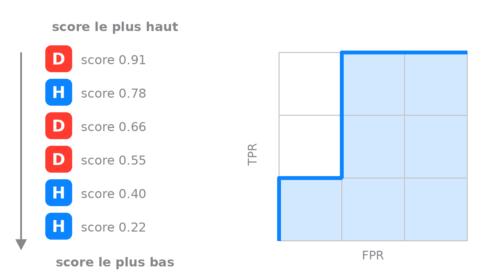

Tout part d'un classement
Oubliez un instant positif et négatif. Un test qui produit un score fait une seule chose : il classe les patients. Alignez-les du score le plus haut au plus bas ; un bon test pousse les malades vers le haut et les sains vers le bas. Tout, dans ROC et AUC, découle de cet ordre, et rien des scores exacts. Voici six patients, trois malades et trois sains, triés par leur score.

Six patients, triés pour que celui au score le plus haut soit en haut et le plus bas en bas. D est un patient malade, H un patient sain. Lisez la liste de haut en bas : montez d’un cran pour chaque D, allez à droite pour chaque H. L’escalier tracé est la courbe ROC.
Pour transformer ce classement en courbe, prenez une grille de trois cases de haut, une ligne par patient malade, et trois de large, une colonne par sain. Partez du coin inférieur gauche et lisez la liste triée depuis le haut, un pas par patient : vers le haut pour un malade, vers la droite pour un sain. Notre liste s’ouvre sur le malade à 0,91, le premier pas est donc vers le haut. Vient ensuite un sain à 0,78, un pas à droite. Puis deux malades de suite, 0,66 et 0,55, deux pas vers le haut qui vous mènent au bord supérieur. Les deux derniers sont sains, 0,40 et 0,22, deux pas à droite jusqu’au coin supérieur droit. Six patients, six pas ; et comme il y a exactement trois de chaque, trois montées et trois pas à droite, vous arrivez dans le coin supérieur droit quel que soit leur ordre. Ce que l’ordre change, c’est le chemin entre les deux coins, et ce chemin est la courbe ROC.
Ces six pas nets supposent que chaque patient a un score différent. Les vrais tests produisent des ex aequo, et l’honnêteté consiste à ne pas inventer un ordre que le test n’a jamais donné. Quand plusieurs patients partagent le même score, on fait un seul déplacement en diagonale au lieu de pas séparés : vers le haut du nombre de malades du groupe, vers la droite du nombre de sains. Un lot que le test ne sépare pas devient une diagonale sur la courbe plutôt qu’un escalier, et c’est pourquoi les vraies courbes ROC sont en partie escalier, en partie pente. Poussez à la limite, quand le test donne à tous le même score, et toute la courbe se rabat sur la diagonale, d’aire 0,5, exactement le verdict qu’un tel test a mérité.
Ce que l'aire compte vraiment
Voici le gain. La grille contient trois fois trois, neuf cases, et chaque case est un appariement d'un malade avec un sain. Une case est sous l'escalier exactement quand ce malade a été classé au-dessus de ce sain, c'est-à-dire quand le test a eu raison sur cette paire. Comptez : sept des neuf sont sous la ligne.
Chaque case est une paire (malade, sain). Les cases bleues sont les paires bien ordonnées ; les deux cases barrées sont les erreurs, où un sain a devancé un malade.
L'aire sous la courbe n'est donc pas une intégrale abstraite. C'est la proportion de paires malade-sain bien ordonnées par le test, ce qui revient à la probabilité qu'un malade au hasard devance un sain au hasard.
Pour ces six patients, l'AUC vaut 7/9, environ 0,78. Deux paires sont mal classées, un sain devançant un malade, deux fois. C'est aussi la statistique de Mann-Whitney, et en machine learning le score standard d'un classifieur binaire, mais la lecture médicale est celle à retenir : à quelle fréquence le test classe la maladie au-dessus de la santé.
Essayez : déplacez les patients
Voici sept nouveaux patients, quatre malades et trois sains, classés du score le plus haut en haut. Déplacez un patient pour changer le classement, ou appuyez sur un préréglage, et regardez l’escalier se redessiner. Quatre malades contre trois sains font douze paires, et une grille de trois cases de large sur quatre de haut.
Remarquez que la grille n’est plus carrée, alors que le carré extérieur l’est toujours : les deux axes vont de 0 à 1 quel que soit le mélange. Chaque pas vers le haut vaut désormais 1/4 et chaque pas à droite 1/3, parce que quatre malades se partagent l’axe vertical et trois sains l’axe horizontal. Changez la composition et les cases changent de forme, mais l’aire garde la même lecture : la proportion de paires bien ordonnées. Et avec des milliers de patients au lieu de sept, les pas rétrécissent jusqu’à ce que l’escalier devienne la courbe lisse que vous avez vue dans le simulateur.
Trois courbes à garder en tête
Un test parfait épouse le coin supérieur gauche (aire 1). Un test inutile suit la diagonale (environ 0,5). Un test parfaitement faux longe le bas (aire 0) ; c'est un vrai test dont les étiquettes sont inversées.
Un test parfait classe chaque malade au-dessus de chaque sain, sa courbe file donc le long du bord gauche puis du haut. Un test qui classe au hasard erre le long de la diagonale, autour de 0,5. En dessous de 0,5, ce n'est pas du bruit : c'est un test qui marche, mais dont la sortie pointe à l'envers.
Un seuil est un point unique sur la courbe
Le score classe les patients, mais il faut bien agir : au-dessus de ce seuil, positif ; en dessous, négatif. Choisir ce seuil, c'est choisir un point sur la courbe ROC. Sa hauteur est la sensibilité obtenue, le taux de vrais positifs ; sa distance au bord gauche est le taux de faux positifs, un moins la spécificité. Déplacez le seuil et le point glisse le long de la courbe, échangeant sensibilité contre spécificité. Où se placer sur ce compromis est une décision clinique, pas statistique, et c'est précisément ce que le simulateur vous fait ressentir.
Un chiffre relie les deux points de vue. Fixez un seuil, transformez le score en un simple positif ou négatif, et la ROC se réduit à trois points. L’aire sous cette courbe réduite vaut (sensibilité + spécificité) / 2, l’exactitude équilibrée à ce point de fonctionnement, et elle n’est jamais supérieure à l’AUC du classement complet.